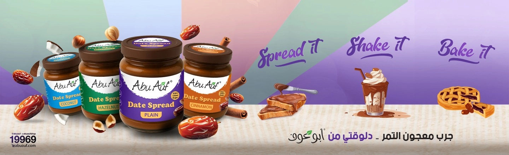

نصائح
فوائد المكسرات النيئة لصحة القلب
المكسرات مصدر غني بالدهون الصحية والألياف، وإضافتها لنظامك اليومي أسهل مما تتخيل.
نصائح ووصفات ومعلومات عن القهوة والمكسرات والتمور والأكل الصحي — من فريق أبو عوف.
المكسرات مصدر غني بالدهون الصحية والألياف، وإضافتها لنظامك اليومي أسهل مما تتخيل.

من التحميص الفاتح للغامق، كل درجة ليها طابع مختلف. تعرف على الفرق واختار اللي يناسب ذوقك.

التمور مش بس حلوة المذاق، ده كمان مصدر سريع للطاقة وغنية بالبوتاسيوم والألياف.

تشكيلة سناكس تجمع بين الطعم اللذيذ والقيمة الغذائية، سهلة التحضير وبتفضل طازة.

البهارات الطازة بتفرق في أي طبق. اعرف إزاي تختارها وتحفظها عشان تحافظ على نكهتها.

وصفة بسيطة تعملها في البيت وتفضل معاك أسبوع كامل، مثالية للفطار السريع.